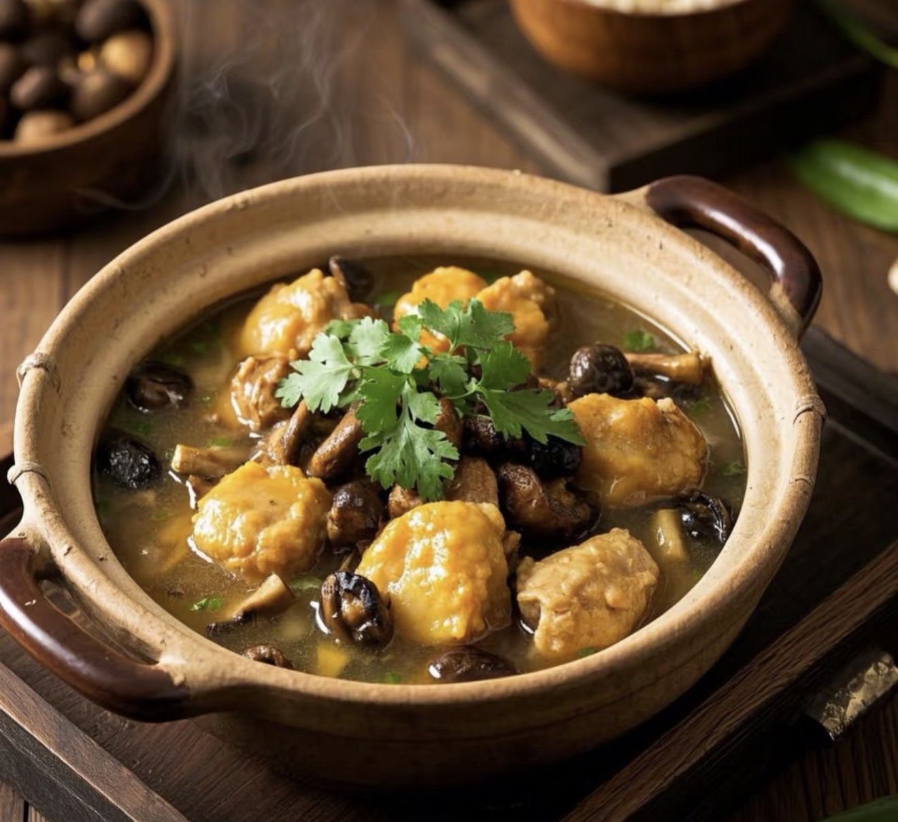
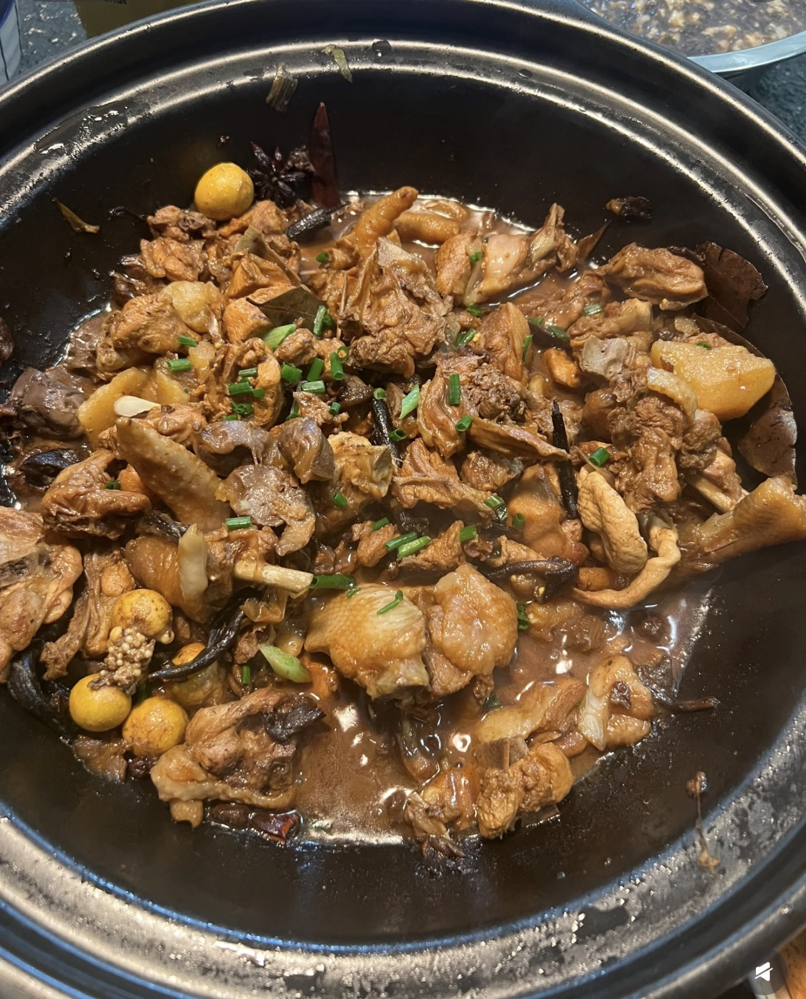

Braised Chicken with Mushrooms
A classic comfort dish with tender chicken and deep mushroom flavor.
Ingredients
- Chicken (about 800g)
- Dried mushrooms
- Ginger
- Garlic
- Scallions
- Star anise
- Sichuan peppercorn
- Soy sauce
- Dark soy sauce
- Cooking wine
- Rock sugar
- Salt
- Oil
Directions
- Cut chicken and rinse.
- Blanch with ginger and cooking wine.
- Rinse clean.
- Soak mushrooms and reserve liquid.
- Heat oil with spices.
- Add aromatics and stir fry.
- Add chicken and cook until lightly browned.
- Add sauces.
- Add mushrooms.
- Pour in soaking water and hot water.
- Add sugar and bring to boil.
- Simmer for 1–1.5 hours.
- Season and reduce sauce.
- Serve hot.